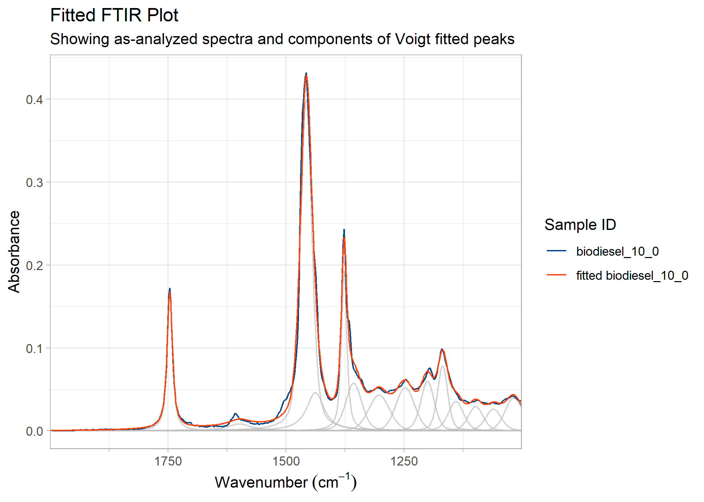

(Français)
Introduction and Installation
The goal of PlotFTIR is to easily and quickly kick-start the production of journal-quality Fourier Transform Infra-Red (FTIR) spectral plots in R using ggplot2. The produced plots can be published directly or further modified by ggplot2 functions.
You can install the development version of PlotFTIR from GitHub with:
Example Plots
This is a basic example which shows you how to plot a prepared set of FTIR spectra:
biodiesel_plot <- plot_ftir(biodiesel)
biodiesel_plot
Plot of FTIR spectra of biodiesel samples.
You can also plot spectra in a stacked/offset manner instead of overlaid:
# Generate a plot
plot_ftir_stacked(biodiesel)
Stacked plot of FTIR spectra of biodiesel samples
Note the default plot and legend titles are in english but can be automatically changed to french defaults by supplying the lang = 'fr' argument to plot creation functions.
Plots can be manipulated, for example, by zooming in on a range:
# Zoom to a specified range of 1850 to 1650 cm^-1
zoom_in_on_range(biodiesel_plot, c(1650, 1850))
FTIR spectra of biodiesel samples, zoomed from 1650 to 1850 cm-1.
Some FTIR plots have a compressed low-energy portion of the graph which you might wish to zoom in on. You can achieve this by the following:
# compress the data with wavenumbers above 2000 (to the left of 2000 on the
# plot) by a factor of 5
compress_low_energy(biodiesel_plot, cutoff = 2000, compression_ratio = 5)
FTIR spectra of biodiesel samples, with low-energy region compressed.
You can also add marker lines (with labels) at specific wavenumbers on the plots, controlling their line or text properties as needed. When labels are close together, you can align them vertically by adjusting vjust in label_aesthetics. Similarly, a shaded band can be added to indicate a region.
biodiesel_marked <- add_wavenumber_marker(biodiesel_plot,
wavenumber = 1742,
text = "C=O Stretch",
label_aesthetics = list("color" = "red")
)
biodiesel_marked <- add_wavenumber_marker(biodiesel_marked,
wavenumber = 1710,
text = "Shoulder",
label_aesthetics = list("color" = "red", "vjust" = 3)
)
add_band(biodiesel_marked, c(2750,3050), "C-H Stretch")
FTIR spectra of biodiesel samples, with vertically aligned peak labels at 1742 and 1710 cm-1 and a coloured band from 3050 to 2750 for C-H stretch.
If the need arises to rename samples listed in the legend, this is possible via rename_plot_sample_ids(). Samples must be listed in the rename vector with the format "new name" = "old name".
new_names <- c(
"0.0% Biodiesel" = "biodiesel_0",
"0.25% Biodiesel" = "biodiesel_0_25",
"0.50% Biodiesel" = "biodiesel_0_50",
"1.0% Biodiesel" = "biodiesel_1_0",
"2.5% Biodiesel" = "biodiesel_2_5",
"5.0% Biodiesel" = "biodiesel_5_0",
"7.5% Biodiesel" = "biodiesel_7_5",
"10.0% Biodiesel" = "biodiesel_10_0",
"Commercial B0.5" = "biodiesel_B0_5",
"Commercial B5" = "biodiesel_B5",
"Unknown Biodiesel" = "diesel_unknown"
)
rename_plot_sample_ids(biodiesel_plot, new_names)
FTIR spectra of biodiesel samples, with renamed samples in legend.
A helper function for the renaming is provided (see the documentation for get_plot_sample_ids()).
Specific sample(s) can be highlighted (other samples greyed out) by calling highlight_sample().
Finally, plot legends are customizable (for basic changes) through a helper function move_plot_legend().
Data Sets
The package contains two datasets to provide example spectra for plotting: * biodiesel is a set of diesels with 0 to 10 % FAMEs (fatty acid methyl esters; biodiesel) content, plus two known and one unknown diesel spectra. * sample_spectra is a set of random FTIR spectra which includes spectra of pure toluene, isopropanol, and heptanes, as well as white printer paper and a polystyrene film.
An example of the biodiesel data set is below:
head(biodiesel)
#> PlotFTIR data:
#> Spectral range: 700.7395 - 710.0579 cm⁻¹
#> Resolution: variable
#> Intensity type: absorbance
#> Number of samples: 1
#> Sample IDs: biodiesel_0Tidy Plot Production
Note that because most functions return a data type similar to what is provided, tidy-eval is possible (using the base R pipe |> or magrittr pipe function %>%).
library(magrittr)
new_ids <- c(
"Toluene" = "toluene", "C7 Alkane" = "heptanes", "IPA" = "isopropanol",
"White Paper" = "paper", "PS Film" = "polystyrene"
)
sample_spectra |>
absorbance_to_transmittance() |>
plot_ftir(plot_title = "Example FTIR Spectra") |>
zoom_in_on_range(zoom_range = c(3800, 800)) |>
compress_low_energy(compression_ratio = 4) |>
add_wavenumber_marker(
wavenumber = 1495,
text = "C-C Aromatic",
line_aesthetics = list("linetype" = "dashed"),
label_aesthetics = list("color" = "#7e0021")
) |>
add_wavenumber_marker(
wavenumber = 3340,
text = "O-H Alcohol",
line_aesthetics = list("linetype" = "dotted"),
label_aesthetics = list("color" = "#ff420e")
) |>
rename_plot_sample_ids(sample_ids = new_ids) |>
move_plot_legend(position = "bottom", direction = "horizontal")
#> Coordinate system already present.
#> ℹ Adding new coordinate system, which will replace the existing one.
A FTIR spectral plot of other samples, showing the complex plots that can be built with this package.
Data Manipulation
FTIR spectral data can be converted between absorbance and transmittance. Only one type of data can exist in a data.frame and be plotted. The functions absorbance_to_transmittance() and transmittance_to_absorbance() perform these conversions.
biodiesel_transm <- absorbance_to_transmittance(biodiesel)
head(biodiesel_transm)
#> PlotFTIR data:
#> Spectral range: 700.7395 - 710.0579 cm⁻¹
#> Resolution: variable
#> Intensity type: transmittance
#> Number of samples: 1
#> Sample IDs: biodiesel_0Functions are provided for adjusting the baseline of spectra, adding or subtracting scalar values from entire spectra, normalizing spectra, and averaging spectra, see: * recalculate_baseline() * add_scalar_value() and subtract_scalar_value() * normalize_spectra() * average_spectra()
Peak Fitting
Peaks can be found in spectra by calling find_ftir_peaks(). Once peaks are identified, you can fit component shapes to overlapping absorption bands using Expectation-Maximization algorithms. The functions find_ftir_peaks() and fit_peaks() detect peak locations and fit Voigt, Gaussian, Lorentzian, or Doniach-Sunjic-Gauss component shapes to decompose complex spectra. Peak detection requires the optional signal package for Savitzky-Golay smoothing.
subset_spectrum <- biodiesel[biodiesel$sample_id == "biodiesel_10_0", ]
subset_spectrum <- subset_spectrum[subset_spectrum$wavenumber < 2000 & subset_spectrum$wavenumber > 1000, ]
fitted <- fit_peaks(subset_spectrum, method = "voigt")
plot_fit_ftir_peaks(ftir = subset_spectrum, fitted_peaks = fitted, plot_components = TRUE)
#> Loading required namespace: gghighlight
FTIR spectra of a diesel sample, zoomed from 2000 to 1000 cm-1, showing fit component peaks.
A detailed vignette demonstrates a complete peak fitting workflow on biodiesel-diesel blend spectra, from identifying functional groups through evaluating fit quality.
Reading Files
PlotFTIR can read .csv, .asp, and .jdx file types. The .csv or .jdx files should contain only one spectra, with columns for wavenumber and absorbance or transmittance. The .asp files should be according to the file specifications (not modified by the user).
Interfacing With ir and ChemoSpec Packages
PlotFTIR has functions to interface with the ir package by Henning Teickner. This package offers complex baseline capabilities, smoothing, and more data analysis tools. More information on the ir package is available in their documetation (via CRAN). There is also capabilities to interface with ChemoSpec package by Bryan Hanson, which supports advanced statistics and chemometrics of spectral data. More information at the ChemoSpec documentation.
Citing This Package
Please cite this package in any journal articles containing images produced by way of the package. If installed from GitHub or CRAN the date field will be properly filled with the publishing year.
citation("PlotFTIR")
#> To cite package 'PlotFTIR' in publications use:
#>
#> Bulsink P (????). _PlotFTIR: Plot FTIR Spectra_. R package version
#> 1.3.1.9000, <https://github.com/NRCan/PlotFTIR>.
#>
#> A BibTeX entry for LaTeX users is
#>
#> @Manual{,
#> title = {PlotFTIR: Plot FTIR Spectra},
#> author = {Philip Bulsink},
#> note = {R package version 1.3.1.9000},
#> url = {https://github.com/NRCan/PlotFTIR},
#> }Language Settings
The package has the ability to change language from English to French for plots on a per-plot basis (call plot_ftir() functions with lang = 'en' or lang = 'fr arguments). In addition, the default language can be set to English or French by setting options('PlotFTIR.lang' = 'en') or options('PlotFTIR.lang' = 'fr') respectively. This can be added to your .RProfile to persist between R sessions.
(English)
Introduction et installation
Le but de PlotFTIR est de lancer facilement et rapidement la production des tracés de spectres de spectroscopie infrarouge à transformée de Fourier (IRTF) de qualité de revues scientifiques dans le system R en utilisant ggplot2. Les tracés produits peuvent être publiés directement ou modifiés par les fonctions ggplot2.
Vous pouvez installer la version de développement de PlotFTIR depuis GitHub avec:
Exemples des tracés
Ceci est un example de base qui vous montre comment tracer un ensemble de spectres IRTF dejà preparé:

Graphique des spectres FTIR d’échantillons de biodiesel.
Vous pouvez également tracer les spectres de manière empilée/décalée au lieu de les superposer :
plot_ftir_stacked(biodiesel, plot_title = "Spectre IRTF empilée", lang = "fr")
Graphique superposé des spectres FTIR d’échantillons de biodiesel
Notez que les titres par défaut de tracé et du légende sont en anglais, mais qu’ils peuvent être automatiquement modifiés en français en fournissant l’argument lang = 'fr' aux fonctions de création de tracés.
Les tracés peuvent être manipulés, par exemple, en zoomant sur une plage :
# Générer un tracé
biodiesel_trace <- plot_ftir(biodiesel, lang = "fr")
# Zoom sur une plage spécifiée de 1850 à 1650 cm^-1
zoom_in_on_range(biodiesel_trace, c(1650, 1850))
Spectres FTIR d’échantillons de biodiesel, zoomés de 1650 à 1850 cm-1.
Certains tracés IRTF ont une partie compressée du graphique à faible énergie qui peuvent etre agrandie de la manière suivante :
# compresser les données avec des nombres d'onde supérieurs à 2000 (à gauche de
# 2000 sur le tracé) d'un facteur 5
compress_low_energy(biodiesel_trace, cutoff = 2000, compression_ratio = 5)
Spectres FTIR d’échantillons de biodiesel, avec la région de basse énergie compressée.
Vous pouvez également ajouter des lignes de marqueur (avec des étiquettes) à des numéros d’onde spécifiques sur les tracés, en contrôlant leurs propriétés de ligne ou de texte selon vos besoins. Lorsque les étiquettes sont proches, vous pouvez les aligner verticalement en ajustant vjust dans label_aesthetics. De même, une bande ombrée peut être ajoutée pour indiquer une région.
biodiesel_marked <- add_wavenumber_marker(biodiesel_trace,
wavenumber = 1742,
text = "C=O étirement",
label_aesthetics = list("color" = "red")
)
biodiesel_marked <- add_wavenumber_marker(biodiesel_marked,
wavenumber = 1710,
text = "Épaule",
label_aesthetics = list("color" = "red", "vjust" = 3)
)
add_band(biodiesel_marked, c(2750,3050), "C-H étirement")
Spectres FTIR d’échantillons de biodiesel, avec des étiquettes de pics alignées verticalement à 1742 et 1710 cm-1, et une bande colorée de 3050 à 2750 pour l’élongation C-H.
S’il est nécessaire de renommer les échantillons répertoriés dans la légende, cela est possible via rename_plot_sample_ids(). Le vecteur de renommage doit avoir le format "nouveau nom" = "ancien nom".
nouveau_noms <- c(
"0,0% Biodiesel" = "biodiesel_0",
"0,25% Biodiesel" = "biodiesel_0_25",
"0,50% Biodiesel" = "biodiesel_0_50",
"1,0% Biodiesel" = "biodiesel_1_0",
"2,5% Biodiesel" = "biodiesel_2_5",
"5,0% Biodiesel" = "biodiesel_5_0",
"7,5% Biodiesel" = "biodiesel_7_5",
"10,0% Biodiesel" = "biodiesel_10_0",
"B0,5 Commercial" = "biodiesel_B0_5",
"B5 Commercial" = "biodiesel_B5",
"Biodiesel Inconnu" = "diesel_unknown"
)
rename_plot_sample_ids(biodiesel_trace, nouveau_noms)
Spectres FTIR d’échantillons de biodiesel, avec les échantillons renommés dans la légende.
Une fonction d’assistance pour le changement de nom est fournie (voir la documentation pour get_plot_sample_ids()).
Un ou plusieurs échantillons spécifiques peuvent être mis en évidence (les autres échantillons étant grisés) en appelant highlight_sample().
Enfin, les légendes des tracés sont personnalisables (pour les modifications de base) via une fonction d’assistance move_plot_legend().
Production de tracés “tidy”
Notez que comme la plupart des fonctions renvoient un type de données similaire à celui qui est fourni, l’évaluation des données est possible (en utilisant la fonction magrittr tuyau %>%).
library(magrittr)
nouveaux_ids <- c(
"Toluène" = "toluene", "C7 alcane" = "heptanes", "alcool isopropylique" = "isopropanol",
"papier blanc" = "paper", "film de polystyrène" = "polystyrene"
)
sample_spectra |>
absorbance_to_transmittance() |>
plot_ftir(plot_title = "Exemple de spectres IRTF", lang = "fr") |>
zoom_in_on_range(zoom_range = c(3800, 800)) |>
compress_low_energy(compression_ratio = 4) |>
add_wavenumber_marker(
wavenumber = 1495,
text = "C-C aromatique",
line_aesthetics = list("linetype" = "dashed"),
label_aesthetics = list("color" = "#7e0021")
) |>
add_wavenumber_marker(
wavenumber = 3340,
text = "O-H alcool",
line_aesthetics = list("linetype" = "dotted"),
label_aesthetics = list("color" = "#ff420e")
) |>
rename_plot_sample_ids(sample_ids = nouveaux_ids) |>
move_plot_legend(position = "bottom", direction = "horizontal")
#> Coordinate system already present.
#> ℹ Adding new coordinate system, which will replace the existing one.
Un spectre FTIR d’autres échantillons, illustrant la complexité des graphiques pouvant être construits avec ce logiciel.
Production de tracés “tidy”
Notez que, comme la plupart des fonctions renvoient un type de données similaire à celui fourni, une “tidy-eval” est possible.
Ensembles des données
Le package contient deux ensembles de données pour fournir des exemples de spectres à tracer: * biodiesel est un ensemble de diesels avec une teneur en esters méthyliques d’acides gras (EMAGs) (ou biodiesel) de 0 à 10 %, plus deux spectres de diesel connus et un inconnu. * sample_spectra est un ensemble de spectres IRTF aléatoires qui comprennent des spectres de toluène pur, d’isopropanol et d’heptanes, ainsi que du papier d’imprimante blanc et un film de polystyrène.
Un exemple de l’ensemble de données biodiesel est ci-dessous:
head(biodiesel)
#> PlotFTIR data:
#> Spectral range: 700.7395 - 710.0579 cm⁻¹
#> Resolution: variable
#> Intensity type: absorbance
#> Number of samples: 1
#> Sample IDs: biodiesel_0Manipulation de données
Les données spectrales IRTF peuvent être converties entre l’absorbance et la transmission. Un seul type de données peut exister dans un data.frame et être tracé. Les fonctions absorbance_to_transmittance() et transmittance_to_absorbance() effectuent ces conversions.
biodiesel_transm <- absorbance_to_transmittance(biodiesel)
head(biodiesel_transm)
#> PlotFTIR data:
#> Spectral range: 700.7395 - 710.0579 cm⁻¹
#> Resolution: variable
#> Intensity type: transmittance
#> Number of samples: 1
#> Sample IDs: biodiesel_0Des fonctions sont fournies pour ajuster la ligne de base des spectres, ajouter ou soustraire des valeurs scalaires de spectres entiers, normalisation des spectres, et calculer la moyenne des spectres, voir : * recalculate_baseline() * add_scalar_value() et subtract_scalar_value() * normalize_spectra() * average_spectra()
Ajustement des pics
Une fois les pics identifiés, vous pouvez ajuster des formes de composantes aux bandes d’absorption chevauchantes à l’aide d’algorithmes d’espérance-maximisation. Les fonctions find_ftir_peaks() et fit_peaks() détectent les emplacements des pics et ajustent des formes de composantes Voigt, Gaussienne, Lorentzienne ou Doniach-Sunjic-Gauss pour décomposer les spectres complexes. La détection des pics nécessite le paquetage optionnel signal pour le lissage de Savitzky-Golay ; les algorithmes d’ajustement nécessitent le paquetage EMpeaksR.
subset_spectrum <- biodiesel[biodiesel$sample_id == "biodiesel_10_0", ]
subset_spectrum <- subset_spectrum[subset_spectrum$wavenumber < 2000 & subset_spectrum$wavenumber > 1000, ]
fitted <- fit_peaks(subset_spectrum, method = "voigt")
plot_fit_ftir_peaks(ftir = subset_spectrum, fitted_peaks = fitted, plot_components = TRUE)
Spectres FTIR d’un échantillon de diesel, zoomés de 2000 à 1000 cm-1, montrant les pics des composants ajustés.
Une vignette détaillée présente un flux de travail complet d’ajustement de pics sur les spectres de mélanges diesel-biodiesel, de l’identification des groupes fonctionnels à l’évaluation de la qualité de l’ajustement.
Lecture des fichiers
PlotFTIR peut lire les fichiers de type .csv, .asp, et .jdx. Le fichier .csv ou .jdx ne doit contenir qu’un seul spectre, avec des colonnes pour le wavenumber et absorbance ou transmittance. Les fichiers .asp doivent être conformes aux spécifications du fichier (non modifiées par l’utilisateur).
Interfaçage avec le paquetage ir
PlotFTIR possède des fonctions pour s’interfacer avec le paquet ir de Teickner. Ce package offre des capacités de lignes de base complexes, de lissage, et plus d’outils d’analyse de données. Plus d’informations sur le paquet ir sont disponibles dans leur [documetation (via CRAN)] (https://cran.r-project.org/package=ir). Il est également possible de s’interfacer avec le paquet ChemoSpec de Bryan Hanson, qui prend en charge les statistiques avancées et la chimiométrie des données spectrales. Plus d’informations sur [la documentation de ChemoSpec] (https://bryanhanson.github.io/ChemoSpec/index.html).
Citer ce paquet
Veuillez citer ce paquet dans tout article de journal contenant des images produites à l’aide de ce paquet. Si le paquet est installé à partir de GitHub ou de CRAN, le texte de la date sera correctement rempli avec l’année de publication.
citation("PlotFTIR")
#> To cite package 'PlotFTIR' in publications use:
#>
#> Bulsink P (????). _PlotFTIR: Plot FTIR Spectra_. R package version
#> 1.3.1.9000, <https://github.com/NRCan/PlotFTIR>.
#>
#> A BibTeX entry for LaTeX users is
#>
#> @Manual{,
#> title = {PlotFTIR: Plot FTIR Spectra},
#> author = {Philip Bulsink},
#> note = {R package version 1.3.1.9000},
#> url = {https://github.com/NRCan/PlotFTIR},
#> }Paramètres de langue
Le paquetage a la capacité de changer la langue de l’anglais au français pour les tracés sur une base individuelle (appeler les fonctions plot_ftir() avec les arguments lang = 'en' ou lang = 'fr'). De plus, la langue par défaut peut être réglée sur l’anglais ou le français en réglant options('PlotFTIR.lang' = 'en') ou options('PlotFTIR.lang' = 'fr') respectivement. Ceci peut être ajouté à votre .RProfile pour persister entre les sessions R.